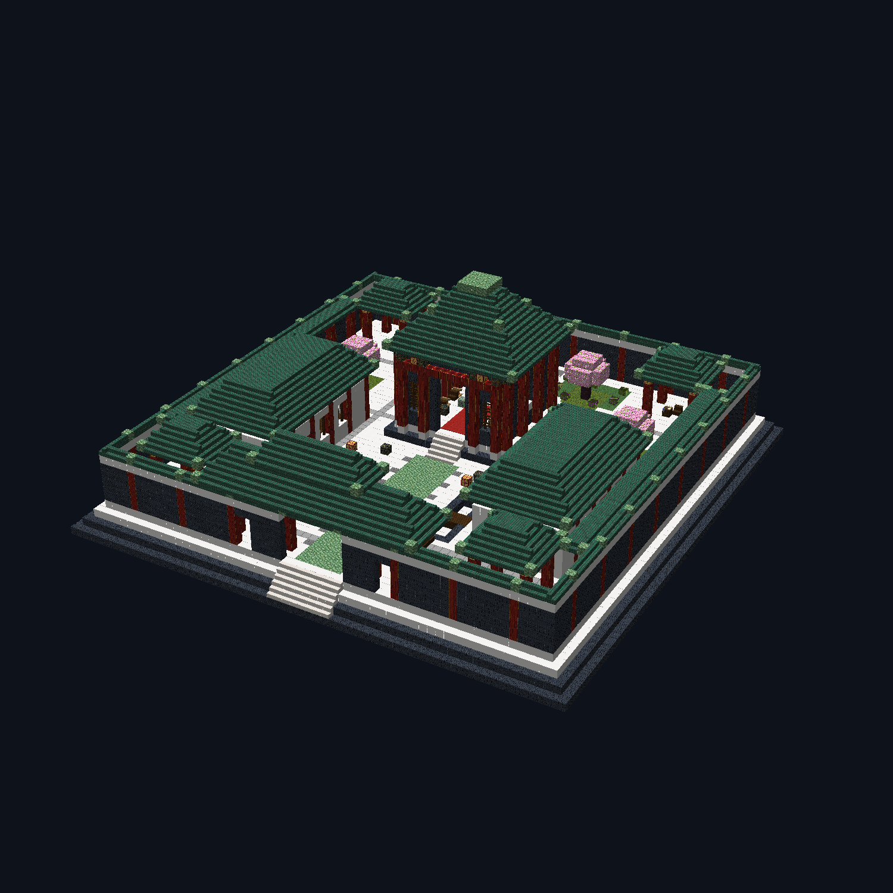
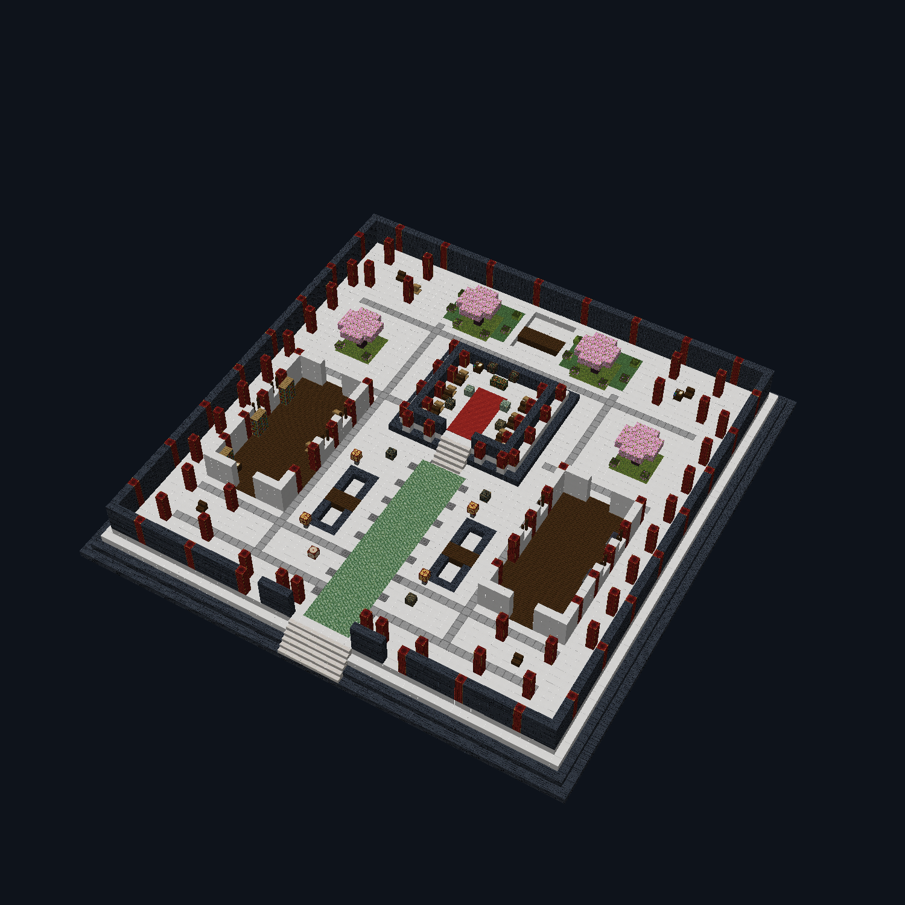
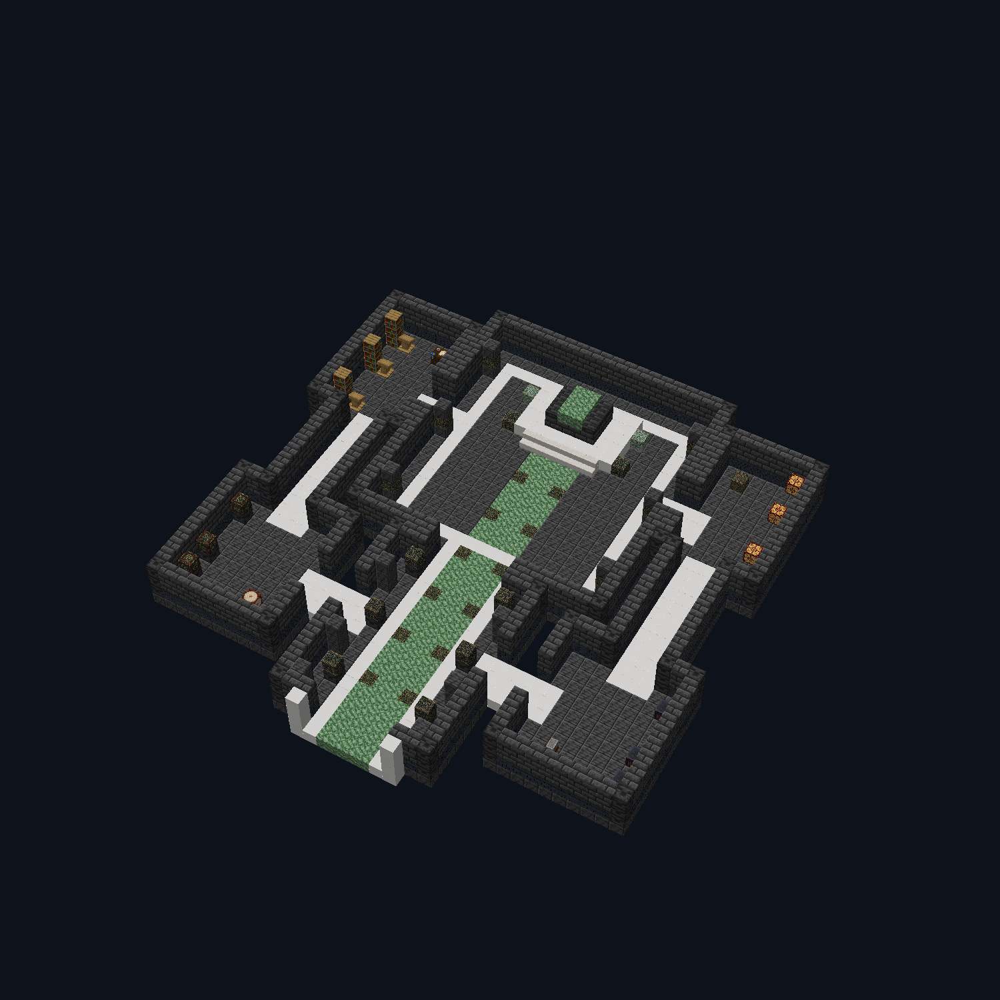
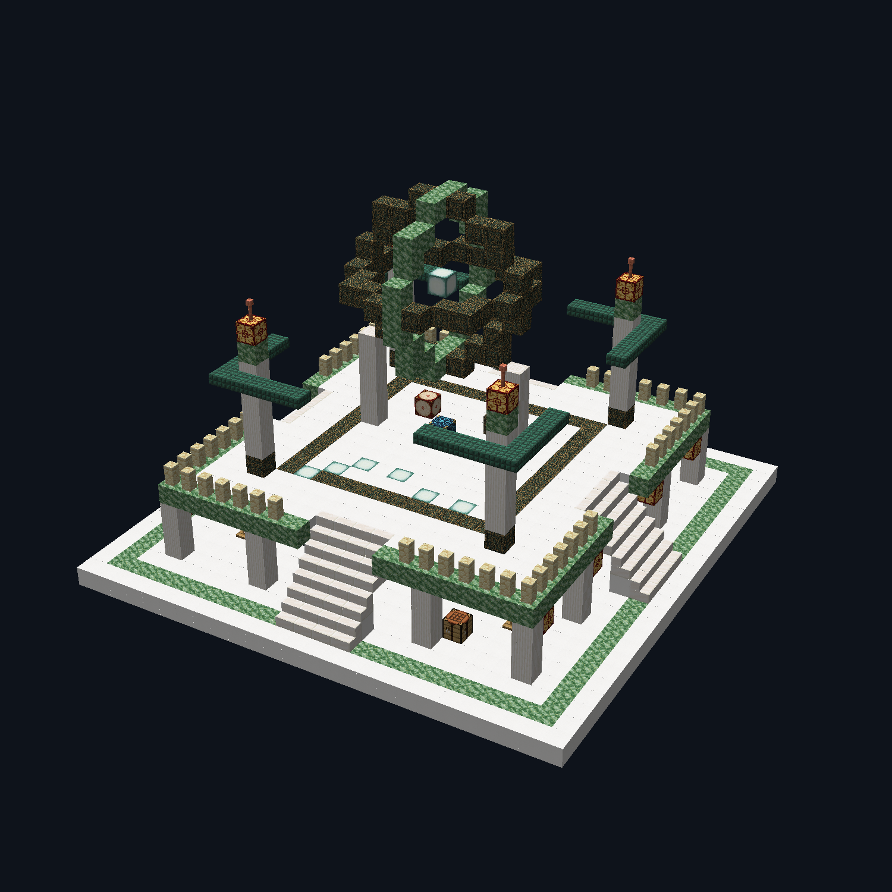

DYNASTY / ARCHITECTURE 03
宫阙、帝陵与观星台
这一轮以建筑空间为主：有明确入口、可以走通的回路、可用的侧室与更有层次的轮廓。
以下为真实 Minecraft 客户端渲染器读取实际建筑代码后的离屏预览，不是游玩截图或 AI 建筑概念图。剖面图特意隐藏屋顶与高墙；预览不展示地形、水面和部分方块实体。游戏里仍有完整屋顶与水池。
01 / 皇家宫殿 · 64 × 64
原 48 × 48 扩为 64 × 64。前门、御道、双池桥、藏书侧殿、锻造工坊、四亭和后园形成一座完整院落。保留原有战利品等级，未堆叠额外宝箱。

层叠殿顶与院墙绿瓦、朱柱、庭树、墙檐；中轴一直通向主殿。

去顶看路线侧殿有书架、讲台、制图台，以及锻造台、高炉、铁砧。桥两侧留通路。02 / 帝陵 · 从墓道进入主墓室

四侧室 + 两侧回路藏书室、陪葬龛、礼乐廊、兵器间；主室有高柱、藻井与棺椁台。图中隐藏高墙与屋顶。

03 / 观星台 · 立体浑天仪四向楼梯可上台，下层可以绕行和查找宝箱，上层嵌有七星地灯与交错星环。文房三件 · 左旧 / 右新
每件独立生成，再按透明轮廓装配为 128 × 128 物品贴图，最长边 120 像素，尽量填满物品栏格子。只换外观，不改属性。
科举试卷象牙纸卷、朱印、红绳与金色卷轴头。
徽墨乌黑墨锭与金龙浮雕，外形不再像小黑点。
竹简半展竹片、穿绳与卷起边缘，清楚区分纸卷。
探索罗盘汉化
补上实际缺失的六个结构词条：皇家宫殿、国子监、帝陵、长城关隘、九霄星坛、幽冥石林。不是只改罗盘物品名字。
你也可以直接进游戏搭
新建同版本整合包的创造测试世界，进去搭就行。完成后交建筑存档、入口截图及建筑所在位置，我再负责导出、分块和接入自然生成。不用逐个写方块坐标。
建筑合作说明 · 给 DeepSeek 的科举任务单 · 本轮验证与限制